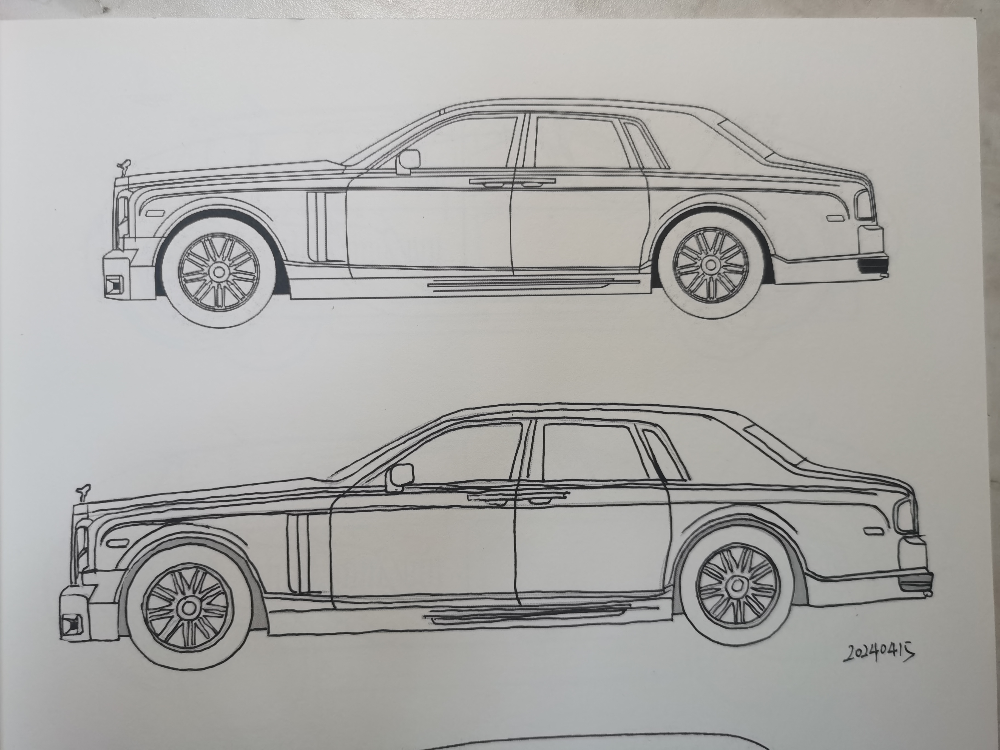

6.结构翻转训练
结构翻转的一些经验推荐
1.练习素材的选择:从易到难
1.1 在三维软件中建立方块,以之为素材进行临摹练习1.2 徒手默写各种比例不同,观察角度不同的方块
1.3 徒手默写比例不同,观察角度不同的基本几何体(或组合或切削)
1.4 以偏向方块形态的物体(或照片)作为素材,进行变换观察角度的结构翻转练习.
1.5 以稍复杂的工业设计造型(或照片)为素材,进行结构翻转练习
1.6 以室内或较规则的室外环境照片,进行变换观察角度的结构翻转练习
1.7 使用结构翻转相关技能进行创作
2.关于练习的严谨度问题
在关键的结构点上要有根据,不瞎画.对于消失点和物体比例方面则可以进行估算.3.结构翻转的一些操作要点
3.1 无论什么物体,首先要观察结构特征3.2 分析物体的组成,分解成多个小盒子
3.3 尝试勾画三视图和透视草图
3.4 画数量少,但尽可能更准确的结构点
3.5 在大体结构上投入更过时间,而不是细节上

从明天开始,根据素材选择要求,从DCC软件绘制立方体练习开始.暂时取消颜色训练,打算先制作比较大的色块划分练习开始